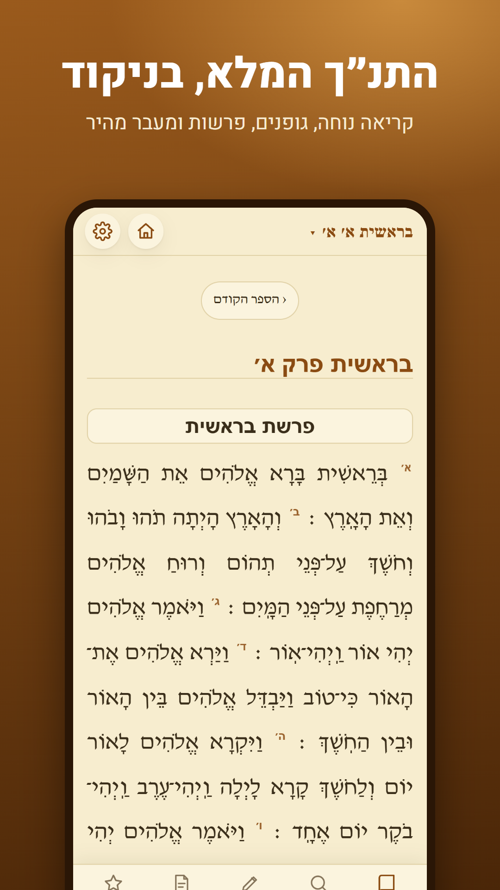
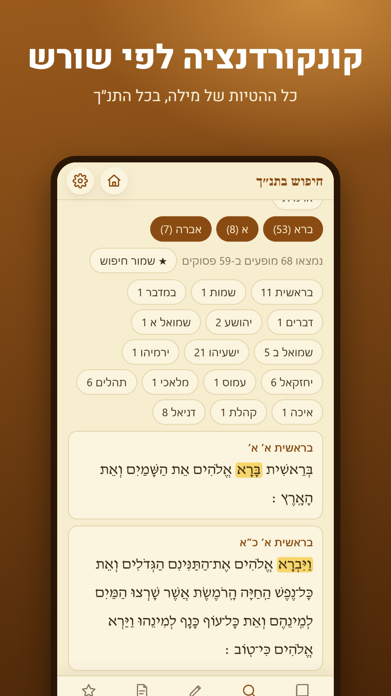
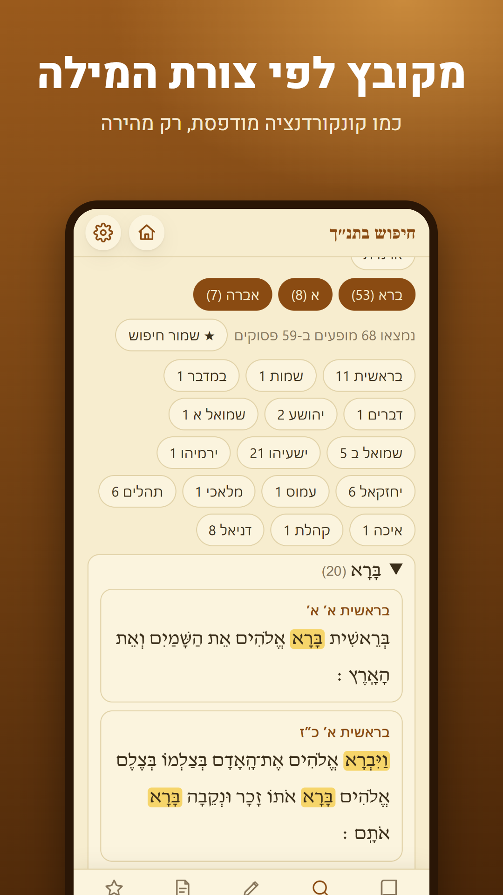
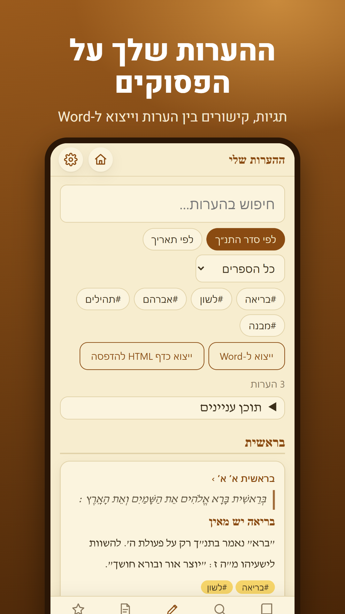
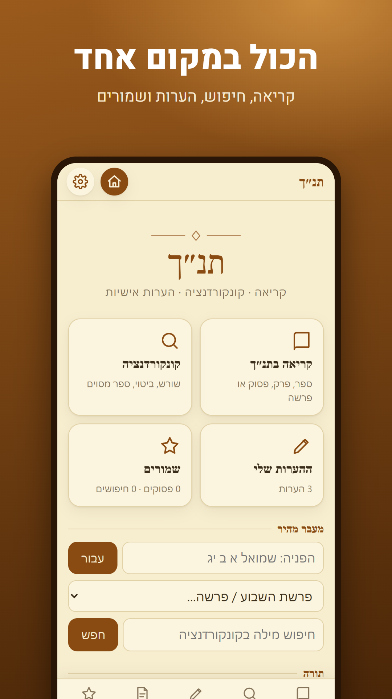

תנ״ך
התנ״ך המלא בניקוד, עם קונקורדנציה לפי שורש ומחברת הערות אישית. עובד בלי אינטרנט.
בקרוב ב-Google Play
קריאה נוחהכל 24 הספרים בניקוד, גופנים, ערכות צבע ופרשות השבוע.
קונקורדנציה לפי שורשכל ההטיות של מילה בכל התנ״ך, עם סינון לפי ספר.
תצוגת קונקורדנציהתוצאות מקובצות לפי צורת המילה, כמו בספר מודפס.
הערות אישיותהערה על כל פסוק, עם תגיות, קישורים וייצוא ל-Word.
שמוריםפסוקים וחיפושים שמורים לחזרה מהירה.
פרטיותבלי חשבון ובלי פרסומות. ההערות נשארות במכשיר שלך.





מחיר
חינם: קריאה, חיפוש מילה, פסוקים שמורים ועד 20 הערות. Premium מוסיף קונקורדנציה לפי שורש, תצוגת קונקורדנציה, הערות ללא הגבלה, חיפושים שמורים וייצוא, במנוי חודשי, שנתי (עם שבוע ניסיון) או ברכישה אחת לתמיד. ההערות שלך לא ננעלות לעולם. ביטולים והחזרים
הטקסט והתיוג המורפולוגי: Open Scriptures Hebrew Bible (OSHB), ברישיון CC BY 4.0.